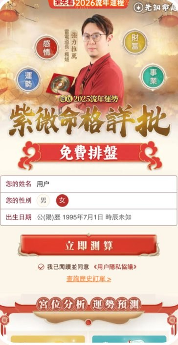
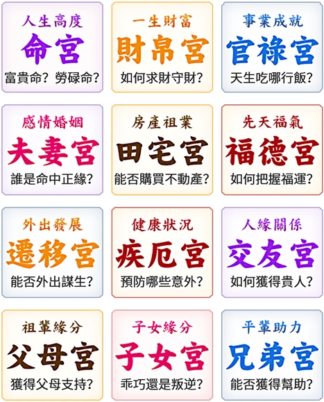

运势 · 轻玄学运势专题改版
通过视觉升级、体验优化与结构重构，解决传统命理 H5 视觉杂乱、转化路径模糊、用户信任度不足的痛点，打造符合「帝王术数」专业调性、高转化的服务落地页。
- 产品
- 紫微命格详批
- 场景
- 移动端 H5 · 港台繁体
- 范围
- 视觉体系 · 组件 · 页面结构
- 结果
- 付费转化 +32%

项目背景与业务诉求
项目背景
紫微斗数作为中国传统「帝王术数」，是命理测算赛道的核心品类之一，用户群体覆盖职场迷茫者、婚恋困惑者、财富规划者等全年龄段人群。但行业内同类 H5 普遍存在视觉同质化严重、信息层级混乱、转化引导生硬、专业感缺失等问题，导致用户首屏跳出率高、付费意愿弱，无法将流量转化为实际营收。
- 打造符合紫微斗数「帝王术数」高端、专业调性的视觉体系，区别于行业同质化产品
- 优化用户浏览与转化路径
- 提升测算付费转化率
- 强化用户对命理服务的信任度，降低决策门槛
- 适配移动端 H5 场景，保证全流程视觉统一、交互流畅
旧版体验痛点梳理
用户调研、竞品分析与页面诊断后，明确四大核心痛点。
01
02
03
04
组件化设计与复用规范
围绕「紫微斗数 · 命盘」主题拆出三类组件，同一套组件复用到首屏、信息填写与报告各页。
书法标题 + 四大场景首屏一眼说清「能算什么」，标题同样用在信息填写页顶部。
复用于首屏信息填写
点一下按钮
唯一的高饱和红只留给行动入口，在金紫底色上对比最强，点击直达信息填写。
复用于首屏页尾信息填写

卷轴标题 + 鎏金容器骨架固定，只替换内容，长页面节奏统一、迭代更快。
复用于12 宫位人生全盘透视名师推荐报告内容
以用户决策路径重构页面
点选模块，手机滚动到对应位置；切换改版前后，对比两版的页面结构。
- 视觉吸引
- 价值传递
- 信任建立
- 转化引导
旧版：模块平铺，没有清晰的决策主线
改版效果与数据价值
以改版前为基准 100，悬停查看说明。
- 首屏跳出率 -12%
- 平均停留时长 +10%
- 测算付费转化率 +32%
- 用户满意度 +19%
悬停或点选任一指标查看说明
- 痛点诊断
- 目标拆解
- 视觉重构
- 体验优化
- 数据验证
全部页面
按住左右拖动 · 点击查看完整页面